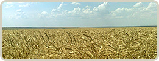
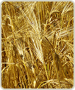

Новости
18.11.2011г.
Уважаемые коллеги! Коллектив Николаевской аграрной компании поздравляет Вас с Днем работника сельского хозяйства!
Дальше
22.10.2011г.
Осенняя посевная завершена! Площадь посева...
Дальше
14.10.2011г.
Во всех подразделениях Николаевской аграрной компании продолжается подготовка почвы...
Дальше
Продукция
Информация о компании
Николаевская аграрная компания, созданная в январе 2005 года, – украинский производитель сельскохозяйственной продукции.
Предприятие арендует земли сельскохозяйственного назначения (пашни) на юге Украины по долгосрочным договорам аренды земли с ее собственниками. Земли, арендуемые компанией, находятся в Снигиревском районе Николаевской области и Березовском районе Одесской области. За период деятельности Николаевской аграрной компании площадь арендуемых земель выросла почти в 2 раза и составляет сейчас около 8 тыс.га пашни.
Специализация компании – растениеводство. Основная производимая продукция – пшеница, ячмень, рапс, семена подсолнечника, которые, в основном, экспортируются в страны Ближнего Востока и Средиземноморья.
Николаевская аграрная компания является держателем паспортов на производство и реализацию оригинальных (элитных) и репродукционных семян и посевного материала зерновых культур.
Предприятие владеет основными фондами, которые позволяют реализовывать полный цикл производства сельскохозяйственной продукции растениеводства, включая долгосрочное хранение в собственных складах.
Центральный офис Николаевской аграрной компании расположен по адресу: Украина, г.Николаев, ул.Декабристов, 41/23а.